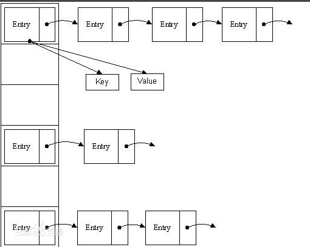
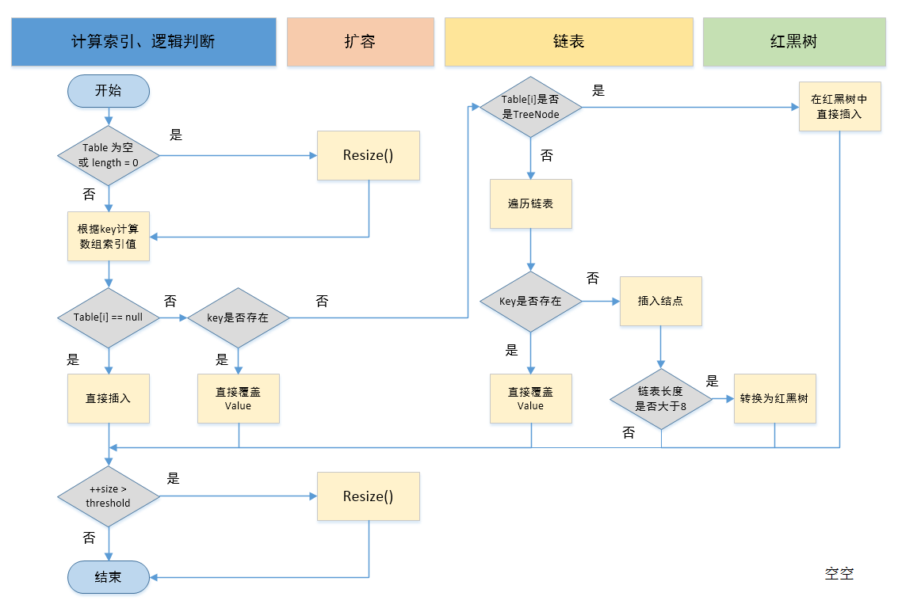

在JDK1.8之前，HashMap采用
数组+链表实现，即使用链表处理冲突，同一hash值的节点都存储在一个链表里。但是当位于一个桶中的元素较多，即hash值相等的元素较多时，通过key值依次查找的效率较低。
概述
在JDK1.8之前，HashMap采用数组+链表实现，即使用链表处理冲突，同一hash值的节点都存储在一个链表里。但是当位于一个桶中的元素较多，即hash值相等的元素较多时，通过key值依次查找的效率较低。而JDK1.8中，HashMap采用数组+链表+红黑树实现，当链表长度超过阈值（8）时，将链表转换为红黑树，这样大大减少了查找时间。
下图中代表jdk1.8之前的hashmap结构，左边部分即代表哈希表，也称为哈希数组，数组的每个元素都是一个单链表的头节点，链表是用来解决冲突的，如果不同的key映射到了数组的同一位置处，就将其放入单链表中。

jdk1.8之前hashmap结构图
jdk1.8之前的hashmap都采用上图的结构，都是基于一个数组和多个单链表，hash值冲突的时候，就将对应节点以链表的形式存储。如果在一个链表中查找其中一个节点时，将会花费O（n）的查找时间，会有很大的性能损失。到了jdk1.8，当同一个hash值的节点数不小于8时，不再采用单链表形式存储，而是采用红黑树，如下图所示。


jdk1.8 hashmap结构图
说明：上图很形象的展示了HashMap的数据结构（数组+链表+红黑树），桶中的结构可能是链表，也可能是红黑树，红黑树的引入是为了提高效率。
涉及到的数据结构：处理hash冲突的链表和红黑树以及位桶
链表的实现

Node是HashMap的一个内部类，实现了Map.Entry接口，本质是就是一个映射(键值对)。上图中的每个黑色圆点就是一个Node对象。来看具体代码：
//Node是单向链表，它实现了Map.Entry接口
static class Node implements Map.Entry { final int hash; final K key;
V value;
Node next; //构造函数Hash值 键 值 下一个节点
Node(int hash, K key, V value, Node next) { this.hash = hash; this.key = key; this.value = value; this.next = next;
} public final K getKey() { return key; } public final V getValue() { return value; } public final String toString() { return key + = + value; } public final int hashCode() { return Objects.hashCode(key) ^ Objects.hashCode(value);
} public final V setValue(V newValue) {
V oldValue = value;
value = newValue; return oldValue;
} //判断两个node是否相等,若key和value都相等，返回true。可以与自身比较为true
public final boolean equals(Object o) { if (o == this) return true; if (o instanceof Map.Entry) {
Map.Entry e = (Map.Entry)o; if (Objects.equals(key, e.getKey()) && Objects.equals(value, e.getValue())) return true;
} return false;
}
}
可以看到，node中包含一个next变量，这个就是链表的关键点，hash结果相同的元素就是通过这个next进行关联的。
红黑树
//红黑树
static final class TreeNode extends LinkedHashMap.Entry {
TreeNode parent; // 父节点
TreeNode left; //左子树
TreeNode right;//右子树
TreeNode prev; // needed to unlink next upon deletion
boolean red; //颜色属性
TreeNode(int hash, K key, V val, Node next) { super(hash, key, val, next);
} //返回当前节点的根节点
final TreeNode root() { for (TreeNode r = this, p;;) { if ((p = r.parent) == null) return r;
r = p;
}
}
}
红黑树比链表多了四个变量，parent父节点、left左节点、right右节点、prev上一个同级节点，红黑树内容较多，不在赘述。
位桶
transient Node[] table;//存储（位桶）的数组
HashMap类中有一个非常重要的字段，就是 Node[] table，即哈希桶数组，明显它是一个Node的数组。
有了以上3个数据结构，只要有一点数据结构基础的人，都可以大致联想到HashMap的实现了。首先有一个每个元素都是链表（可能表述不准确）的数组，当添加一个元素（key-value）时，就首先计算元素key的hash值，以此确定插入数组中的位置，但是可能存在同一hash值的元素已经被放在数组同一位置了，这时就添加到同一hash值的元素的后面，他们在数组的同一位置，但是形成了链表，所以说数组存放的是链表。而当链表长度太长时，链表就转换为红黑树，这样大大提高了查找的效率。
HashMap源码分析
类的继承关系
public class HashMap extends AbstractMap implements Map, Cloneable, Serializable
可以看到HashMap继承自父类（AbstractMap），实现了Map、Cloneable、Serializable接口。其中，Map接口定义了一组通用的操作；Cloneable接口则表示可以进行拷贝，在HashMap中，实现的是浅层次拷贝，即对拷贝对象的改变会影响被拷贝的对象；Serializable接口表示HashMap实现了序列化，即可以将HashMap对象保存至本地，之后可以恢复状态。
类的属性
public class HashMap extends AbstractMap implements Map, Cloneable, Serializable { // 序列号
private static final long serialVersionUID = 362498820763181265L; // 默认的初始容量是16
static final int DEFAULT_INITIAL_CAPACITY = 1 ; // 最大容量
static final int MAXIMUM_CAPACITY = 1 ; // 默认的填充因子
static final float DEFAULT_LOAD_FACTOR = 0.75f; // 当桶(bucket)上的结点数大于这个值时会转成红黑树
static final int TREEIFY_THRESHOLD = 8; // 当桶(bucket)上的结点数小于这个值时树转链表
static final int UNTREEIFY_THRESHOLD = 6; // 桶中结构转化为红黑树对应的table的最小大小
static final int MIN_TREEIFY_CAPACITY = 64; // 存储元素的数组，总是2的幂次倍
transient Node[] table; // 存放具体元素的集
transient Set> entrySet; // 存放元素的个数，注意这个不等于数组的长度。
transient int size; // 每次扩容和更改map结构的计数器
transient int modCount; // 临界值 当实际大小(容量*填充因子)超过临界值时，会进行扩容
int threshold; // 填充因子
final float loadFactor;
}
说明：类的数据成员很重要，以上也解释得很详细了。
类的构造函数
HashMap(int, float)型构造函数
public HashMap(int initialCapacity, float loadFactor) { // 初始容量不能小于0，否则报错
if (initialCapacity ) throw new IllegalArgumentException("Illegal initial capacity: " + initialCapacity); // 初始容量不能大于最大值，否则为最大值
if (initialCapacity > MAXIMUM_CAPACITY)
initialCapacity = MAXIMUM_CAPACITY; // 填充因子不能小于或等于0，不能为非数字
if (loadFactor Float.isNaN(loadFactor)) throw new IllegalArgumentException("Illegal load factor: " + loadFactor); // 初始化填充因子
this.loadFactor = loadFactor; // 初始化threshold大小
this.threshold = tableSizeFor(initialCapacity);
}
说明：tableSizeFor(initialCapacity)返回大于initialCapacity的最小的二次幂数值。
static final int tableSizeFor(int cap) { int n = cap - 1;
n |= n >>> 1;
n |= n >>> 2;
n |= n >>> 4;
n |= n >>> 8;
n |= n >>> 16; return (n = MAXIMUM_CAPACITY) ? MAXIMUM_CAPACITY : n + 1;
}
说明：>>> 操作符表示无符号右移，高位取0。
HashMap(int)型构造函数
public HashMap(int initialCapacity) { // 调用HashMap(int, float)型构造函数
this(initialCapacity, DEFAULT_LOAD_FACTOR);
}
HashMap()型构造函数
public HashMap() { // 初始化填充因子
this.loadFactor = DEFAULT_LOAD_FACTOR;
}
HashMap(Map)型构造函数
public HashMap(Mapextends K, ? extends V> m) { // 初始化填充因子
this.loadFactor = DEFAULT_LOAD_FACTOR; // 将m中的所有元素添加至HashMap中
putMapEntries(m, false);
}
说明：putMapEntries(Map m, boolean evict)函数将m的所有元素存入本HashMap实例中。
final void putMapEntries(Mapextends K, ? extends V> m, boolean evict) { int s = m.size(); if (s > 0) { // 判断table是否已经初始化
if (table == null) { // pre-size // 未初始化，s为m的实际元素个数
float ft = ((float)s / loadFactor) + 1.0F; int t = ((ft float)MAXIMUM_CAPACITY) ? (int)ft : MAXIMUM_CAPACITY); // 计算得到的t大于阈值，则初始化阈值
if (t > threshold)
threshold = tableSizeFor(t);
} // 已初始化，并且m元素个数大于阈值，进行扩容处理
else if (s > threshold)
resize(); // 将m中的所有元素添加至HashMap中
for (Map.Entryextends K, ? extends V> e : m.entrySet()) {
K key = e.getKey();
V value = e.getValue();
putVal(hash(key), key, value, false, evict);
}
}
}
hash算法
在JDK 1.8中，hash方法如下：
static final int hash(Object key) { int h; return (key == null) ? 0 : (h = key.hashCode()) ^ (h >>> 16);
}
（1）首先获取对象的hashCode()值，然后将hashCode值右移16位，然后将右移后的值与原来的hashCode做异或运算，返回结果。（其中h>>>16，在JDK1.8中，优化了高位运算的算法，使用了零扩展，无论正数还是负数，都在高位插入0）。
（2）在putVal源码中，我们通过(n-1)&hash获取该对象的键在hashmap中的位置。（其中hash的值就是（1）中获得的值）其中n表示的是hash桶数组的长度，并且该长度为2的n次方，这样(n-1)&hash就等价于hash%n。因为&运算的效率高于%运算。
final V putVal(int hash, K key, V value, boolean onlyIfAbsent, boolean evict) {
...
if ((p = tab[i = (n - 1) & hash]) == null)//获取位置
tab[i] = newNode(hash, key, value, null);
...
}
tab即是table，n是map集合的容量大小，hash是上面方法的返回值。因为通常声明map集合时不会指定大小，或者初始化的时候就创建一个容量很大的map对象，所以这个通过容量大小与key值进行hash的算法在开始的时候只会对低位进行计算，虽然容量的2进制高位一开始都是0，但是key的2进制高位通常是有值的，因此先在hash方法中将key的hashCode右移16位在与自身异或，使得高位也可以参与hash，更大程度上减少了碰撞率。
下面举例说明下，n为table的长度。

重要方法分析
（1）putVal方法
首先说明，HashMap并没有直接提供putVal接口给用户调用，而是提供的put方法，而put方法就是通过putVal来插入元素的。
public V put(K key, V value) { // 对key的hashCode()做hash
return putVal(hash(key), key, value, false, true);
}
putVal方法执行过程可以通过下图来理解：

①.判断键值对数组table[i]是否为空或为null，否则执行resize()进行扩容；
②.根据键值key计算hash值得到插入的数组索引i，如果table[i]==null，直接新建节点添加，转向⑥，如果table[i]不为空，转向③；
③.判断table[i]的首个元素是否和key一样，如果相同直接覆盖value，否则转向④，这里的相同指的是hashCode以及equals；
④.判断table[i] 是否为treeNode，即table[i] 是否是红黑树，如果是红黑树，则直接在树中插入键值对，否则转向⑤；
⑤.遍历table[i]，判断链表长度是否大于8，大于8的话把链表转换为红黑树，在红黑树中执行插入操作，否则进行链表的插入操作；遍历过程中若发现key已经存在直接覆盖value即可；
⑥.插入成功后，判断实际存在的键值对数量size是否超多了最大容量threshold，如果超过，进行扩容。
具体源码如下：
final V putVal(int hash, K key, V value, boolean onlyIfAbsent, boolean evict) {
Node[] tab; Node p; int n, i; // 步骤①：tab为空则创建 // table未初始化或者长度为0，进行扩容
if ((tab = table) == null || (n = tab.length) == 0)
n = (tab = resize()).length; // 步骤②：计算index，并对null做处理 // (n - 1) & hash 确定元素存放在哪个桶中，桶为空，新生成结点放入桶中(此时，这个结点是放在数组中)
if ((p = tab[i = (n - 1) & hash]) == null)
tab[i] = newNode(hash, key, value, null); // 桶中已经存在元素
else {
Node e; K k; // 步骤③：节点key存在，直接覆盖value // 比较桶中第一个元素(数组中的结点)的hash值相等，key相等
if (p.hash == hash && ((k = p.key) == key || (key != null && key.equals(k)))) // 将第一个元素赋值给e，用e来记录
e = p; // 步骤④：判断该链为红黑树 // hash值不相等，即key不相等；为红黑树结点
else if (p instanceof TreeNode) // 放入树中
e = ((TreeNode)p).putTreeVal(this, tab, hash, key, value); // 步骤⑤：该链为链表 // 为链表结点
else { // 在链表最末插入结点
for (int binCount = 0; ; ++binCount) { // 到达链表的尾部
if ((e = p.next) == null) { // 在尾部插入新结点
p.next = newNode(hash, key, value, null); // 结点数量达到阈值，转化为红黑树
if (binCount >= TREEIFY_THRESHOLD - 1) // -1 for 1st
treeifyBin(tab, hash); // 跳出循环
break;
} // 判断链表中结点的key值与插入的元素的key值是否相等
if (e.hash == hash && ((k = e.key) == key || (key != null && key.equals(k)))) // 相等，跳出循环
break; // 用于遍历桶中的链表，与前面的e = p.next组合，可以遍历链表
p = e;
}
} // 表示在桶中找到key值、hash值与插入元素相等的结点
if (e != null) { // 记录e的value
V oldValue = e.value; // onlyIfAbsent为false或者旧值为null
if (!onlyIfAbsent || oldValue == null) //用新值替换旧值
e.value = value; // 访问后回调
afterNodeAccess(e); // 返回旧值
return oldValue;
}
} // 结构性修改
++modCount; // 步骤⑥：超过最大容量 就扩容 // 实际大小大于阈值则扩容
if (++size > threshold)
resize(); // 插入后回调
afterNodeInsertion(evict); return null;
}
HashMap的数据存储实现原理
流程：
1. 根据key计算得到key.hash = (h = k.hashCode()) ^ (h >>> 16)；
2. 根据key.hash计算得到桶数组的索引index = key.hash & (table.length - 1)，这样就找到该key的存放位置了：
① 如果该位置没有数据，用该数据新生成一个节点保存新数据，返回null；
② 如果该位置有数据是一个红黑树，那么执行相应的插入 / 更新操作；
③ 如果该位置有数据是一个链表，分两种情况一是该链表没有这个节点，另一个是该链表上有这个节点，注意这里判断的依据是key.hash是否一样：
如果该链表没有这个节点，那么采用尾插法新增节点保存新数据，返回null；如果该链表已经有这个节点了，那么找到该节点并更新新数据，返回老数据。
注意：
HashMap的put会返回key的上一次保存的数据，比如：
HashMap map = new HashMap();
System.out.println(map.put("a", "A")); // 打印null
System.out.println(map.put("a", "AA")); // 打印A
System.out.println(map.put("a", "AB")); // 打印AA
（2）getNode方法
说明：HashMap同样并没有直接提供getNode接口给用户调用，而是提供的get方法，而get方法就是通过getNode来取得元素的。
public V get(Object key) {
Node e; return (e = getNode(hash(key), key)) == null ? null : e.value;
}
final Node getNode(int hash, Object key) {
Node[] tab; Node first, e; int n; K k; // table已经初始化，长度大于0，根据hash寻找table中的项也不为空
if ((tab = table) != null && (n = tab.length) > 0 && (first = tab[(n - 1) & hash]) != null) { // 桶中第一项(数组元素)相等
if (first.hash == hash && // always check first node
((k = first.key) == key || (key != null && key.equals(k)))) return first; // 桶中不止一个结点
if ((e = first.next) != null) { // 为红黑树结点
if (first instanceof TreeNode) // 在红黑树中查找
return ((TreeNode)first).getTreeNode(hash, key); // 否则，在链表中查找
do { if (e.hash == hash && ((k = e.key) == key || (key != null && key.equals(k)))) return e;
} while ((e = e.next) != null);
}
} return null;
}
（3）resize方法
①.在jdk1.8中，resize方法是在hashmap中的键值对大于阀值时或者初始化时，就调用resize方法进行扩容；
②.每次扩展的时候，都是扩展2倍；
③.扩展后Node对象的位置要么在原位置，要么移动到原偏移量两倍的位置。
final Node[] resize() {
Node[] oldTab = table;//oldTab指向hash桶数组
int oldCap = (oldTab == null) ? 0 : oldTab.length; int oldThr = threshold; int newCap, newThr = 0; if (oldCap > 0) {//如果oldCap不为空的话，就是hash桶数组不为空
if (oldCap >= MAXIMUM_CAPACITY) {//如果大于最大容量了，就赋值为整数最大的阀值
threshold = Integer.MAX_VALUE; return oldTab;//返回
}//如果当前hash桶数组的长度在扩容后仍然小于最大容量 并且oldCap大于默认值16
else if ((newCap = oldCap oldCap >= DEFAULT_INITIAL_CAPACITY)
newThr = oldThr // double threshold 双倍扩容阀值threshold
} else if (oldThr > 0) // initial capacity was placed in threshold
newCap = oldThr; else { // zero initial threshold signifies using defaults
newCap = DEFAULT_INITIAL_CAPACITY;
newThr = (int)(DEFAULT_LOAD_FACTOR * DEFAULT_INITIAL_CAPACITY);
} if (newThr == 0) { float ft = (float)newCap * loadFactor;
newThr = (newCap float)MAXIMUM_CAPACITY ? (int)ft : Integer.MAX_VALUE);
}
threshold = newThr;
@SuppressWarnings({"rawtypes","unchecked"})
Node[] newTab = (Node[])new Node[newCap];//新建hash桶数组
table = newTab;//将新数组的值复制给旧的hash桶数组
if (oldTab != null) {//进行扩容操作，复制Node对象值到新的hash桶数组
for (int j = 0; j j) {
Node e; if ((e = oldTab[j]) != null) {//如果旧的hash桶数组在j结点处不为空，复制给e
oldTab[j] = null;//将旧的hash桶数组在j结点处设置为空，方便gc
if (e.next == null)//如果e后面没有Node结点
newTab[e.hash & (newCap - 1)] = e;//直接对e的hash值对新的数组长度求模获得存储位置
else if (e instanceof TreeNode)//如果e是红黑树的类型，那么添加到红黑树中
((TreeNode)e).split(this, newTab, j, oldCap); else { // preserve order
Node loHead = null, loTail = null;
Node hiHead = null, hiTail = null;
Node next; do {
next = e.next;//将Node结点的next赋值给next
if ((e.hash & oldCap) == 0) {//如果结点e的hash值与原hash桶数组的长度作与运算为0
if (loTail == null)//如果loTail为null
loHead = e;//将e结点赋值给loHead
else loTail.next = e;//否则将e赋值给loTail.next
loTail = e;//然后将e复制给loTail
} else {//如果结点e的hash值与原hash桶数组的长度作与运算不为0
if (hiTail == null)//如果hiTail为null
hiHead = e;//将e赋值给hiHead
else hiTail.next = e;//如果hiTail不为空，将e复制给hiTail.next
hiTail = e;//将e复制个hiTail
}
} while ((e = next) != null);//直到e为空
if (loTail != null) {//如果loTail不为空
loTail.next = null;//将loTail.next设置为空
newTab[j] = loHead;//将loHead赋值给新的hash桶数组[j]处
} if (hiTail != null) {//如果hiTail不为空
hiTail.next = null;//将hiTail.next赋值为空
newTab[j + oldCap] = hiHead;//将hiHead赋值给新的hash桶数组[j+旧hash桶数组长度]
}
}
}
}
} return newTab;
}